จากข้อกำหนดของอุปกรณ์, ดิสก์ A ใช้เวลา 50 ms ในการบริการแต่ละครั้ง และ ดิสก์ B ใช้เวลา 30 ms ในการบริการ จำนวนเทอร์มินอลมีทั้งสิ้น 17 เทอร์มินอล ค่าอัตราความสำเร็จที่ดิสก์ A วัดได้เท่ากับ 15.70 การบริการต่อวินาที จงหาค่าอัตราความสำเร็จของระบบ และค่าภาระงานของอุปกรณ์ต่างๆ
ระบบสามารถแสดงโดยรูป 7.3 จากโจทย์ ค่า 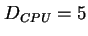 วินาที  ,
,  , 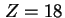 วินาที และค่า 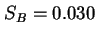 วินาที, 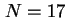, 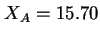 งานต่อวินาที
, 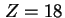 วินาที และค่า 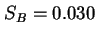 วินาที, 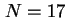, 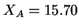 งานต่อวินาที
เนื่องจากงานต่อแวะมาที่ตัวประมวลผลกลางก่อนออกจากระบบ ค่าแวะเวียนที่ตัวประมวลผลกลางจะเท่ากับ
| 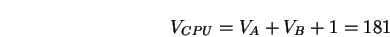 | (7.21) |
เราสามารถหาค่าความต้องการการบริการได้ดังต่อไปนี้
| 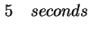 | (7.22) | ||
| 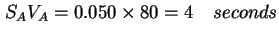 | (7.23) | ||
| 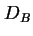 | 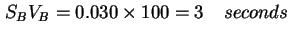 | (7.24) |
จากกฎการไหลต่อเนื่องของงาน จะสามารถหาอัตราความสำเร็จของงานเท่ากับ
| 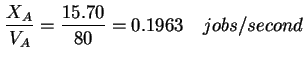 | (7.25) | ||
| 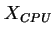 | 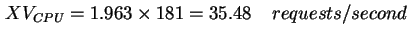 | (7.26) | |
| 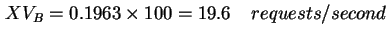 | (7.27) |
โดยใช้กฎภาระงาน ค่าภาระงานของแต่ละอุปกรณ์จะเท่ากับ
| 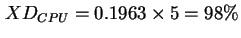 | (7.28) | ||
| 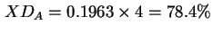 | (7.29) | ||
| 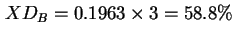 | (7.30) |
ค่าการแวะเวียนเป็นการระบุการไหลของงานในระบบ ซึ่งสามารถแสดงในอีกลักษณะหนึ่งคือความน่าจะเป็นของการเปลี่ยนแปลง (Transition Probability) 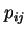 เป็นความน่าจะเป็นที่งานจะออกจากคิว  และเข้าใช้งานคิว
และเข้าใช้งานคิว  ค่าอัตราการแวะเวียน และค่าความน่าจะเป็นของการเปลี่ยนแปลง เป็นค่าที่ให้ความหมายเหมือนกัน และสามารถคำนวณหาเพื่อค่าซึ่งกันและกันได้ ในระบบที่เป็นไปตามกฎการไหลต่อเนื่องของงาน
ค่าอัตราการแวะเวียน และค่าความน่าจะเป็นของการเปลี่ยนแปลง เป็นค่าที่ให้ความหมายเหมือนกัน และสามารถคำนวณหาเพื่อค่าซึ่งกันและกันได้ ในระบบที่เป็นไปตามกฎการไหลต่อเนื่องของงาน
| 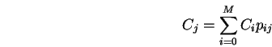 | (7.31) |
ในที่นี้ 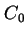 หมายถึงจำนวนงานที่เสร็จออกจากระบบที่ผ่านออกไปภายนอก ดังนั้น 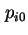 จึงเป็นความน่าจะเป็นที่งานจะออกจากระบบ เมื่อเสร็จการรับบริการจากอุปกรณ์  เมื่อหารทั้งสองด้านของสมการโดย เราจะได้
เมื่อหารทั้งสองด้านของสมการโดย เราจะได้
เนื่องจากการที่งานออกจากระบบ หรือออกไปที่จุด ``Out'' เราถือว่าเป็นการที่งานเสร็จการรับบริการจากระบบ เพราะฉะนั้น
สมการ 7.35 และ 7.36 เรียกว่าสมการอัตราการแวะเวียน (Visit Ratio Equation) ซึ่งสามารถใช้คำนวณความน่าจะเป็นการเปลี่ยนแปลงได้
สำหรับระบบบริการกลาง เมื่องานได้รับการบริการจากทุกคิว งานจะกลับเข้ามาที่ตัวประมวลผลกลาง
| 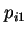 | 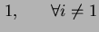 | (7.34) | |
| (7.35) |
ดังนั้นเราจะได้ค่าสมการการแวะเวียนเท่ากับ
| 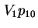 | (7.36) | ||
| 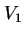 | 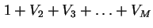 | (7.37) | |
| 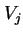 | 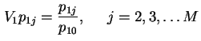 | (7.38) |
![\includegraphics[width=3in]{fig/timeqt.eps}](img323.png)